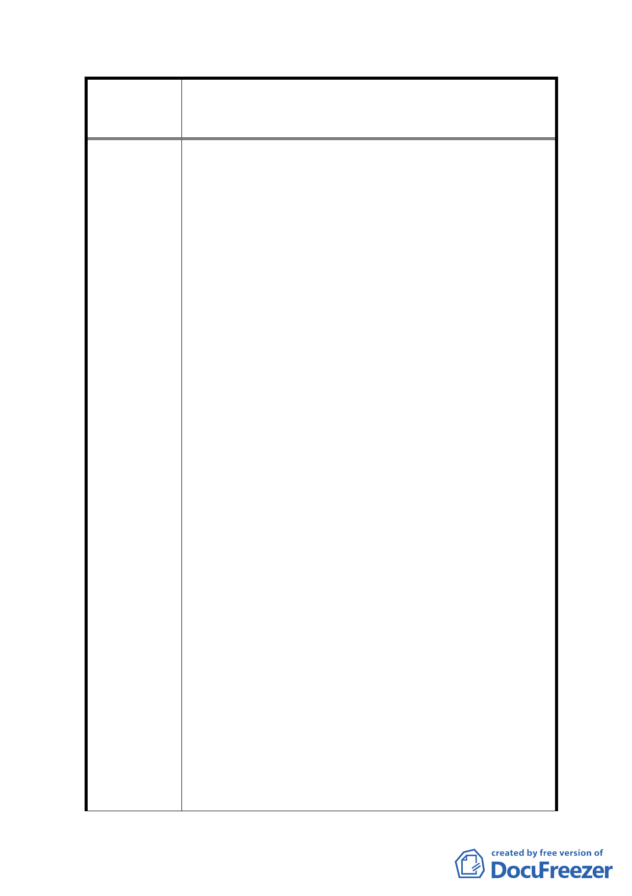

變更及修訂臺北市中正區永昌段四小段 48 地號等 380
案 名 筆土地（徵求參與「促進都市再生 2010 年臺北好好看」
開發計畫 7 處基地回復原都市計畫案）細部計畫案
再造以臻完美。
三、101 年 3 月 30 日都更處來函稱都發局刻辦理回復都
市計畫，並取消劃定之公辦更新地區。今該區土造
建物大部分塌陷，無人居住，現有巷彎曲狹窄，屬
窳陋地區，易造成治安死角，危及公共安全，是以
上述公辦更新地區劃定之事由迄今並未消滅，塌陷
髒亂更形嚴重，與日俱增，又該處位於內湖行政中
心正對面，為內湖首善地段，誠有礙觀瞻，為此建
請不宜輕言取消本更新地區。
四、原公展之細部計畫案，其道路規劃為 8 米與範圍外
之 6、4 米相互銜接，車流易受阻（詳附件二）。
324 巷為百年以上之既成道路，通行至廣場東側都市
計畫道路，因尚未開闢必須穿越廣場中間通行，在未
辦廢巷前廣場被一分為二無法完整開闢（詳附件
四）。基上請再擴大都市計畫範圍，將廣場週邊未納
入之道路、相鄰市場用地及其週邊道路均予以納入，
並調整路寬均為 6 米，引進順暢之車流，提供防災救
護之需，形成為一完整道路系統（詳附件六）。
五、上述範圍內之四、五樓老舊公寓土地面積計 1,181
平方公尺，已超過單獨劃設都更單元之法定面積，
迄今整合尚未達三分之二，故建請於辦理回復都市
計畫之程序中，併案討論是否免回復都市計畫，另
再擴大都市計劃範圍，修正細部計畫，劃定兩都更
單元（詳附件五、六）。
四、五樓老舊公寓東側因尚未整合完成，其東邊建築
線維持不變。另市場用地西邊法定空地上建有車道，
配合都市計劃道路調整向內退縮 2 米，市場用地與廣
場間之道路取銷，市場用地調整地形後面積維持不
變，即兩基地合併為一宗基地，原有車道移置廣場與
市場地界線邊，立書人願另行施作車道替代。調整地
形後面積有所增加全部移至廣場。
上情無礙市場改建時程，又市府可免支工程費、節省
公帑。
六、2010 容積獎勵值優於自辦都更，今其逾時失效，回
復原自辦都更之規定，其獎勵值由低轉高再調降，
-8-